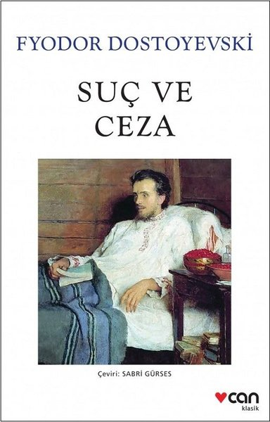

Suç ve Ceza
Yazar: Fyodor Dostoyevski
Sayfa Sayısı: 705
Yayınevi: İş Bankası Kültür Yayınları
Romanın başkahramanı Raskolnikov, St. Petersburg'da yaşayan yoksul bir hukuk öğrencisidir...
Yazar: Fyodor Dostoyevski
Sayfa Sayısı: 705
Yayınevi: İş Bankası Kültür Yayınları
Romanın başkahramanı Raskolnikov, St. Petersburg'da yaşayan yoksul bir hukuk öğrencisidir...

Yazar: George Orwell
Sayfa Sayısı: 352
Yayınevi: Can Yayınları
Distopik bir gelecekte geçen roman, totaliter bir rejimin gözetimi altında yaşayan Winston Smith'in hikayesini anlatır...
Yazar: Franz Kafka
Sayfa Sayısı: 160
Yayınevi: Türkiye İş Bankası Kültür Yayınları
Gregor Samsa bir sabah uyandığında kendini dev bir böceğe dönüşmüş olarak bulur. Bu absürt durum üzerinden modern insanın yabancılaşmasını anlatan çarpıcı bir eser...